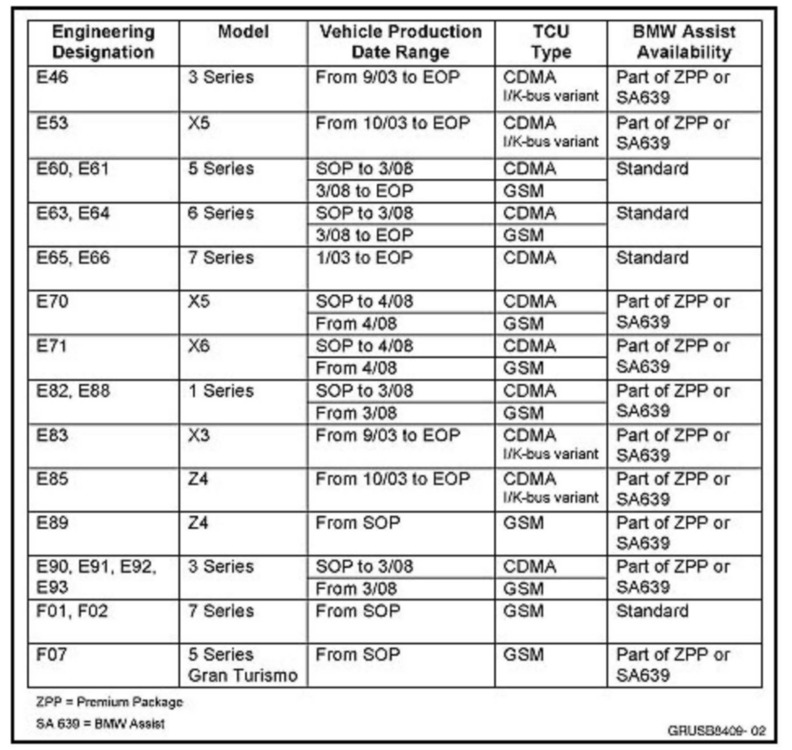

Telematics Control Unit (TCU) - Swapping For Testing
SI B84 11 06Communication Systems
February 2012
Technical Service
This Service Information bulletin supersedes SI B84 11 06 dated March 2010.
[NEW] designates changes to this revision
SUBJECT
Swapping TCUs for Testing
MODEL
E46
E53
E60, E61
E63, E64
E65, E66
E70, E71
E82, E88
E83
E85
E89
E90, E91, E92, E93
F01, F02
F07
Refer to the table below for more details
INFORMATION

SITUATION
Installing a Telematics Control Unit (TCU) from a known good vehicle into a problem vehicle is acceptable for testing purposes only.
Precautions:
^ [NEW] Swapping TCUs for testing purposes must only be performed when recommended by Technical Support via PuMA.
^ The vehicles must have the same production range, e.g., do not install a pre - 3/08 TCU into a post - 3/08 production vehicle.
^ The vehicle must have the same TCU type, e.g., Code Division Multiple Access (CDMA), Global System for Mobile (GSM), I/K-Bus, etc.
^ The vehicles must be similarly equipped, e.g., if the problem vehicle is equipped with a navigation system, the known good vehicle must be equipped with a navigation system.
^ [NEW] Do NOT program or code the test TCU to the donor vehicle.
^ NEW] The TCU from the known good vehicle must be reinstalled in the original vehicle after testing has been completed.
[NEW] NOTE: This step is very important and it must be completed!
[NEW] After reinstalling the test TCU in the original vehicle from which it was borrowed, a BMW Assist test call must be performed.
The relationship between the Electronic Serial Number (ESN) or the International Mobile Equipment Identity (IMEI) in the TCU and the Vehicle Identification Number (VIN) must always be maintained.
BMW of North America LLC deactivates the cellular services for the Network Access Device (NAD) within the TCU when the BMW Assist subscriber agreement expires.
WARRANTY INFORMATION
Refer to (Part Swapping for Diagnostic or Programming Purposes Only).